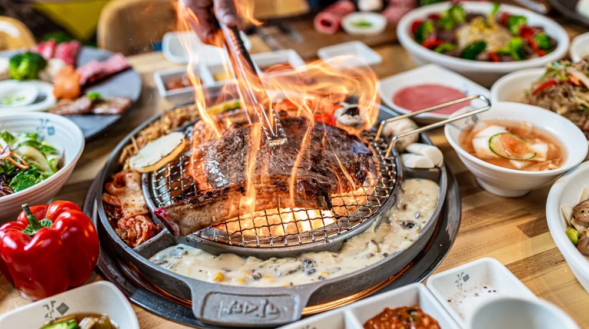

종가 내림음식 프라이빗 다이닝, 특별한 경험 쉽게 예약하는 5단계 가이드
사진: Erik Mclean / Pexels (무료 이미지, 출처 표기)
종가 내림음식 프라이빗 다이닝, 어떤 경험일까요?

특별한 날 소중한 사람들과 잊지 못할 추억을 만들고 싶으신가요? 조상의 지혜와 손맛이 깃든 '종가 내림음식'을 프라이빗한 공간에서 맛보는 경험은 그 어떤 선물보다 값질 것입니다. 하지만 품격 있는 종가 다이닝을 어떻게 찾고 예약해야 할지 막막하게 느껴질 수 있습니다. 이 글은 여러분이 궁금해하는 모든 것을 담아, 실패 없이 최고의 미식 경험을 할 수 있도록 돕는 실용적인 가이드가 되어 드릴 것입니다.
'종가 내림음식'은 대대로 이어져 온 종가(宗家, 한 가문의 맏집)의 전통 조리법과 식문화를 계승한 요리를 의미합니다. 여기에 '프라이빗 다이닝'이라는 요소를 더하면, 독립된 공간에서 오직 소수의 손님만을 위해 차려진 정성 가득한 한정식을 경험할 수 있습니다. 이는 단순한 식사를 넘어, 한국의 깊은 역사와 문화를 오감으로 체험하는 특별한 기회가 됩니다.
나에게 맞는 종가 다이닝, 이렇게 선택하세요
다양한 종가 내림음식 프라이빗 다이닝 중 자신에게 맞는 곳을 선택하려면 몇 가지 기준을 고려해야 합니다. 단순히 유명세보다는 본인의 취향과 목적에 부합하는 곳을 찾는 것이 중요합니다.
- 음식의 특징: 특정 종가의 내림음식은 지역별, 문중별로 고유한 특색을 가집니다. 예를 들어, 안동 김씨 종가의 간고등어나 영양 조씨 종가의 씨앗유과처럼 특화된 메뉴가 있는지도 확인해볼 수 있습니다.
- 공간의 분위기: 고즈넉한 한옥에서 전통적인 분위기를 느끼고 싶은지, 혹은 현대적인 해석이 가미된 모던 한식 레스토랑의 프라이빗 룸을 선호하는지 고려하세요. 중요한 모임의 성격에 따라 분위기가 달라질 수 있습니다.
- 메뉴 구성과 유연성: 코스 요리가 어떻게 구성되어 있는지, 채식이나 알레르기 등 특정 식단에 대한 요청이 가능한지 사전에 확인하는 것이 좋습니다. 맞춤형 서비스가 가능한 곳은 더욱 만족스러운 경험을 제공할 수 있습니다.
- 예산: 프라이빗 다이닝은 일반 식사보다 가격대가 높으므로, 예산을 미리 정해두고 그에 맞는 곳을 물색하는 것이 현명합니다. 보통 인당 10만 원대부터 30만 원 이상까지 다양하게 분포되어 있습니다.
- 위치와 접근성: 서울 도심에 위치해 접근이 쉬운 곳이 있는가 하면, 고택이나 자연 속에 자리한 곳도 있습니다. 방문 목적과 동선을 고려하여 편리한 곳을 선택하세요.
종가 내림음식 프라이빗 다이닝 예약, 5단계로 따라하기
원하는 종가 내림음식 프라이빗 다이닝을 찾았다면, 이제 예약 절차를 진행할 차례입니다. 다음 5단계에 따라 차근차근 진행하면 어려움 없이 예약할 수 있습니다.
- 1단계: 정보 탐색 및 후보지 선정
온라인 검색, 미식 관련 커뮤니티, 소셜 미디어 등을 통해 관심 있는 종가 다이닝 레스토랑을 찾아봅니다. 공식 홈페이지나 관련 기사를 통해 메뉴, 가격, 분위기, 서비스 등을 비교하며 2~3곳의 후보지를 선정하는 것이 좋습니다. - 2단계: 전화 또는 온라인 문의
선정한 후보지에 전화하거나 공식 홈페이지의 온라인 문의 시스템을 통해 예약 가능 여부와 상세 정보를 문의합니다. 특히 원하는 날짜와 시간, 인원, 프라이빗 룸 이용 가능 여부를 정확히 전달해야 합니다. - 3단계: 메뉴 및 가격 확인, 특별 요청사항 조율
현재 제공되는 코스 메뉴와 인당 가격을 확인하고, 추가적으로 필요한 서비스(주류 페어링, 기념일 케이크 반입 등)나 식사 제한 사항(알레르기, 채식 등)이 있다면 이때 상세하게 조율합니다. - 4단계: 예약 확정 및 보증금 결제
모든 조건이 만족스럽다면 예약을 확정하고, 안내에 따라 보증금을 결제합니다. 대부분의 프라이빗 다이닝은 노쇼 방지를 위해 예약금이나 카드 정보 사전 등록을 요구하며, 이는 예약 취소 규정과 밀접하게 연결됩니다. - 5단계: 예약 확인 및 방문
방문 며칠 전 예약 확인 전화를 받거나 문자를 통해 최종 확인을 합니다. 방문 당일에는 여유롭게 도착하여 특별한 미식 경험을 즐기시면 됩니다.
예약 전 꼭 확인해야 할 주요 체크리스트
성공적인 종가 내림음식 프라이빗 다이닝 경험을 위해 예약 전 반드시 확인해야 할 사항들을 정리했습니다. 놓치기 쉬운 부분들을 미리 점검하여 만족도를 높이세요.
위 내용은 2026년 08월 기준으로 일반적인 사항이며, 각 업장마다 정책이 다를 수 있습니다. 정확한 사항은 공식 홈페이지나 해당 기관에서 다시 확인하시길 권장합니다.
자주 묻는 질문
종가 내림음식 프라이빗 다이닝을 예약할 때 흔히 궁금해하는 질문들을 모아 답변해 드립니다.
Q: 종가 내림음식 프라이빗 다이닝은 외국인 손님에게도 적합할까요?
A: 네, 매우 적합합니다. 한국의 전통적인 맛과 문화를 깊이 있게 경험할 수 있는 특별한 기회가 되기 때문에, 한국 문화를 체험하고 싶은 외국인 손님들에게 좋은 인상을 남길 수 있습니다. 많은 곳이 외국어 메뉴판이나 간단한 영어 안내 서비스를 제공합니다.
Q: 예약은 보통 얼마나 일찍 해야 하나요?
A: 인기 있는 곳이나 주말, 특정 기념일(어버이날, 크리스마스 등)에는 한 달 이상 전에 예약이 마감되는 경우가 많습니다. 최소 2~3주 전에는 예약하는 것이 좋으며, 특정 날짜를 원한다면 최대한 빨리 문의하는 것을 추천합니다.
Q: 드레스 코드가 있나요?
A: 대부분의 종가 내림음식 프라이빗 다이닝은 캐주얼 복장도 허용하지만, 공간의 품격을 고려하여 단정하고 깔끔한 차림을 권장합니다. 격식 있는 모임이라면 세미 정장이나 비즈니스 캐주얼을 준비하는 것이 좋습니다.
🔗 이 글도 함께 보면 좋아요: 종가음식 프라이빗 다이닝, 가격대별 경험 완벽 비교 가이드